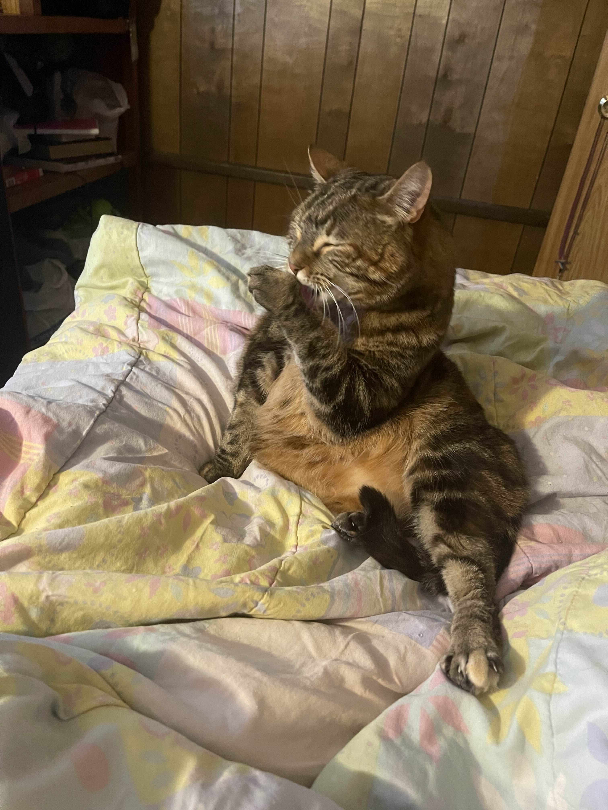
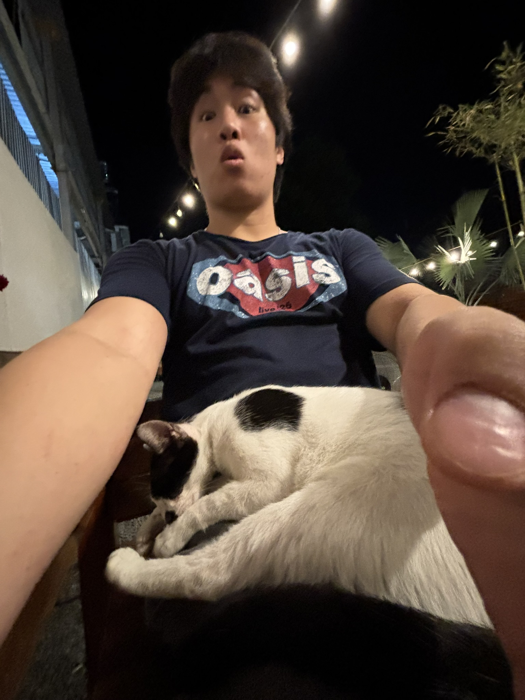

Hi! My name is Lyons, and I am currently a 3rd year university student passionate about data science and analytics.
Research project done as an IML scholar in the Fall 2025 school semester. Project looks at the AP top 25 Football pollsters and explores various metrics on measuring 'bias' that pollsters may have for or against a certain team. Here's a link to an interactive Shiny app I made that visualizes the pollsters geographically: Voter Biases App
Interactive Shiny app I made for my Japanese classes. The characters range from the first level course to the fourth level course at my university. Link to the shiny app: Kanji Practice App
I love listening and discovering new music. My favorite genre that I fall back on on any given day is definetely alternative/indie rock. However, I am very open-minded and love recommendations! Some of my favorite artists include but are not limited to Elliott Smith, Jeff Buckley, Fiona Apple, Sheena Ringo, The Beatles, and Aphex Twin. Below are my top 5 albums of all time (subject to NO change):
I LOVE cats, and will forever be a cat person(Dachshund's are the only exception). Here's a picture of my personal cat, Miu(left), and a picture of me with a random kitty at a Cafe from when I went to Vietnam(right).


Email: lyonstran21@gmail.com
GitHub: github.com/lyonstran
LinkedIn: linkedin.com/in/lyonstranuiuc